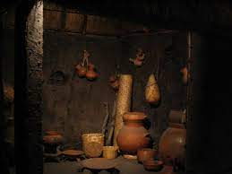
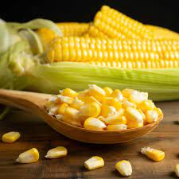
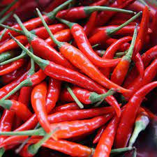
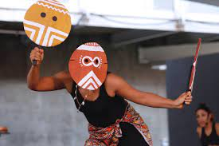

La comida tradicional mexicana tiene sus raíces en las culturas indígenas precolombinas, como los aztecas y mayas, que utilizaron ingredientes como el maíz, chiles y hierbas aromáticas.
La llegada de los españoles en el siglo XVI introdujo nuevos ingredientes y técnicas culinarias, como la carne de res y cerdo, el aceite de oliva y el vino.
Además, la influencia africana también contribuyó a la diversidad de la cocina mexicana con ingredientes como el plátano macho y la yuca.
A lo largo de los siglos, estas influencias se fusionaron en las distintas regiones de México, dando lugar a una amplia variedad de platillos regionales únicos. El maíz sigue siendo un pilar fundamental de la dieta mexicana y es un símbolo importante de la cultura culinaria del país.
Cocina Precolombina:
Antes de la llegada de los españoles en el siglo XVI, México estaba habitado por diversas culturas indígenas, como los aztecas, mayas, zapotecas, y muchos otros. Estas civilizaciones desarrollaron una rica tradición culinaria que incluía ingredientes como el maíz, frijoles, chiles, cacao, aguacate, jitomate, calabaza y chayote, entre otros.

Maíz:
El maíz, en particular, era un alimento fundamental en la dieta precolombina y sigue siendo el ingrediente central de la comida mexicana. Fue domesticado en Mesoamérica hace miles de años y se utilizaba para hacer tortillas, tamales, atole y otros alimentos básicos.

Chiles y Hierbas:
Los chiles y las hierbas aromáticas también eran esenciales en la cocina precolombina, dando a los platillos su distintivo sabor picante y aromático. Además, se utilizaban técnicas como la nixtamalización para procesar el maíz y aumentar su valor nutricional.

Influencia Española:
La llegada de los conquistadores españoles en el siglo XVI trajo nuevos ingredientes y técnicas culinarias a México. Introdujeron alimentos como la carne de res, cerdo, pollo, aceite de oliva, vino y productos lácteos. La fusión de ingredientes indígenas con ingredientes europeos dio lugar a la creación de nuevos platillos y técnicas culinarias.
Africanos en México:
Durante la colonización, también llegaron esclavos africanos a México, y su influencia se hizo sentir en la gastronomía. Contribuyeron con el uso de ingredientes como el plátano macho, yuca y algunas especias, que se incorporaron en la comida mexicana.

Fusiones Regionales: A lo largo de los siglos, las distintas regiones de México desarrollaron su propia interpretación de la comida tradicional, basándose en ingredientes locales y técnicas culinarias específicas. Esto dio lugar a una gran diversidad de platillos regionales, como el mole poblano, los tacos al pastor en la Ciudad de México y los tamales en Oaxaca.